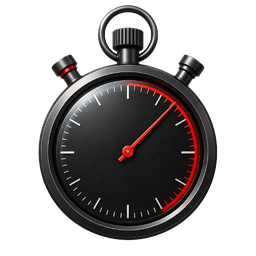

Atender • Avaliar • Despachar • Proteger
Central 190
Simulação ultra realista de atendimento policial: informação incompleta, risco dinâmico, protocolo e despacho tático sob pressão.
Cadastro inicial
Monte seu operador
Escolha seu avatar
Modo de jogo
Patente
Atendente I
Ocorrências resolvidas
0
Melhor tempo
--
Cidade base
São Paulo
Expansão
Pronta para DLC
Nota média
--
Sequência segura
0
Progresso de carreira
Aguardando evolução
Planejamento do plantão
Rádio: aguardando início do plantão.
Últimos relatórios
Plantão ativo
Operador

00:00
Atendimento em andamento
Ocorrência
Prioridade alta
Resumo operacional
Risco em tempo real
Aguardando triagem
Despacho operacional
Selecionar unidades
República
Treinamento interno
Manual de Protocolo 190
A próxima fase adiciona camada de treinamento: o jogador precisa equilibrar triagem, segurança do solicitante e despacho proporcional. O protocolo não é para travar o jogador, mas para avaliar qualidade operacional.
1. LocalizaçãoConfirmar bairro, referência, direção de fuga e melhor acesso da viatura.
2. Risco imediatoIdentificar arma, agressor presente, disparos, incêndio, combustível ou ameaça contra vítima.
3. VítimasPriorizar feridos, crianças, idosos, reféns, pessoa presa ou solicitante sem abrigo.
4. SegurançaOrientar abrigo, manter distância, não perseguir suspeitos e preservar a linha.
5. Despacho proporcionalEnviar recurso suficiente sem sobrecarregar a rede operacional.
Configuração e integridade
Central 190 v0.10.0
Fase 4 • Reconstrução visual premium
Perfil atual: ultra realista. Esta build apresenta um sistema visual operacional premium sem perder carreira, recuperação, idiomas ou proteção anti-quebra.
Modo de avaliaçãoRigor alto: tempo, protocolo, proporcionalidade e agravamento contam no resultado.
InterfaceInterface premium mobile-first com painéis reutilizáveis, hierarquia mais clara e controles críticos sempre acessíveis.
ConteúdoBanco validado automaticamente antes do plantão: IDs, unidades, perguntas, eventos e referências.
Idioma da operaçãoA interface, os casos e os relatórios podem ser alternados sem reiniciar o jogo.
Sistema anti-quebra
Aguardando auditoria
Diagnóstico interno
Modo mobile e acessibilidade
Ajustes locais para toque, leitura, movimento, contraste, tela cheia e instalação PWA.
O jogo prioriza celular em retrato; tablet, paisagem e PC continuam jogáveis.
Proteção de dadosSave v2 com idioma, checksum, backup rotativo, migração automática e recuperação de plantão por até 24 horas.
Resultado da missão
+0 XP
Relatório técnico de desempenho